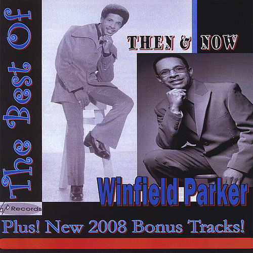

Winfield Parker
Winfield Albert Parker was an American soul and gospel singer-songwriter and saxophonist based in Baltimore who was known for his 1971 R&B song "S.O.S. ".
Complete Discography & Tracklists (6)
2003 Sending Up My Timber 🎵 10 Tracks
2005 Miracle 🎵 0 Tracks
No tracks registered.
2008 Best of Winfield Parker 🎵 0 Tracks
No tracks registered.
2016 Mr. Clean: Winfield Parker At Ru-Jac 🎵 0 Tracks
No tracks registered.